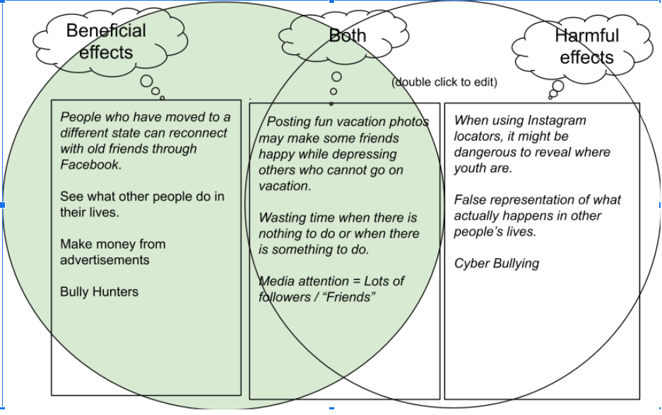

Chapter 2 Questions
Unit 2.2
1. In your own words, describe what event driven programming is. What event handler was used in the I Have a Dream app? How was it used?
Event driven programming is a form of coding in which the program responds to an action that has occured within the program. In the I Have a Dream app, the even handler was the clicking of the images of MLK and Malcom X. Clicking the images was used for playing of speeches from MLK and Malcom X and pausing them when pressed again.
2. Is it possible to create an app without event driven programming? Explain.
It is not possible to create an app without event driven programming because unless the app is all visual and is only meant for the user to see automatically, there will be a need for event driven programming to allow the program to respond to the actions of the user.
3. What elements and compoments make up the User Interface (UI) for the I Have a Dream app?
The I Have a Dream app uses if and else statements for clicking the images on the screen, and a audio player for playing the speeches when the image is clicked.
4. What are some of the elements that make up the UI for a car? A vending machine?
Elements for UI in a car is the ability to play music from connecting to phones, displaying a GPS for users to see where they are going, and a touch screen to make it easier for the user to get through the options. For a vending machine, the UI shows the drinks that are available and an option for different flavors of the option. Once the images have been clicked, the maching pours the selected drink through the funnel to where the cup is.
Unit 2.3
1. In your own words, give a sentence that would explain to a friend the difference between the WWW and the internet.
The difference between the WWW and the internet is how the WWW is a part of the internet and reperesents information that is held withing the internet that can be accesed by most people. On the other hand the interent is larger than the WWW and make up everything that is online related and is basically the infrastructure for the WWW.
2. List a beneficial effect and a harmful effect for a social media app that you discussed in your POGIL group. Are the effects on society, culture, or economics? Include a screenshot of the Venn diagram you made with your group.
Some benefits that come from social media apps are their ability to connect people who otherwise would have forgotten each other. Friendships could be kept and people are able to share their lives on a platform for others to see. While the benefits are nice, some downsides to social media apps are their addicting and time consuming traits. Once someone gets on social media, they will be hooked onto it for some time. Another downside is the presence of cyber bullying online which effect some people's lives.
3. If you were a developer of one of the social media apps that you discussed, how would you reduce the harmful effects?
To reduce the harmful effects of social media apps as a developer, I would create a alert wihin the app that tells the user how long they have been using the app and that it is recommended to take a break and do something else.
Unit 2.4
1. What components make up the User Interface (UI) for this enhanced version of the I Have A Dream app?
The components that make up the user interface for the I have a dream app are the buttons which allow the user to navigate through the app. Another component for the UI is the accelerometer which allows the user to shake the phone and play an audio file in the process.
2. A computational artifact is something created by a human using a computer. We've just created a mobile app, which is certainly an example of such a artifact. Given examples from your own experience of computational artifacts that you've created -- images, videos, presentations, mash-ups -- and describe the software you used to create them.
Some computation artifacts that I have made are music videos for a final project in class. To make the video, I used Adobe Premiere to help me edit and piece together recorded clips for the video.
Unit 2.5
1.Give an example of a special purpose computer that you are familiar with and briefly describe its hardware and its software.
A special purpose computer that I know is a calculator. The hardware within it is small but contains a processing unit to do calculations and solar panels to provide power for the calculator. The software within the calculator helps take in the imput from the buttons and tells the processor to calculate and display the results.
2. Explain in your own words the difference between running your app by "Connecting to the Companion" and running your app by "Packaging" it.
The difference between runnin the app connecting and packaging is how connecting has the host send the data for the companion to run whereas the
3. As we learned in this lesson, a byte is about the same amount of memory as a character, such as the letter 't'. There are approximately 7 million characters in all of the Harry Potter novels combined. How many bytes of memory would all of the Harry Potter novels take up? How many copies of the Harry Potter novels would fit on a 7 Gigabyte flash drive. (Remember 1 Gigabyte is 1 billion bytes.)
There would be about 7 million bytes for all the Harry Potter novels and about 142 copies of the Harry Potter books would fit into a 1 GB flash drive.
Unit 2.6
1. (POGIL) Write an algorithm using the 4 simple commands to navigate the robot through the maze in the POGIL question listed in your online textbook.
MOVE_FORWARD
MOVE_FORWARD
ROTATE_RIGHT
MOVE_FORWARD
MOVE_FORWARD
MOVE_FORWARD
MOVE_FORWARD
ROTATE_LEFT
MOVE_FORWARD
MOVE_FORWARD
2. (POGIL) Write an algorithm using repetition control structures to navigate the robot through the maze referenced above.
Repeat 2 times
----MOVE_FORWARD
ROTATE_RIGHT
Repeat 4 times
----MOVE_FORWARD
ROTATE_LEFT
Repeat 2 times
----MOVE_FORWARD
3. (POGIL) Include a description or a photo of your drawing of a maze that the general algorithm in the POGIL exercise CANNOT solve.
A maze that the algorithm cannot solve would have two given directions for the conditional to check but would go to one of the directions over the other. The one that the conditional would choose first would be the dead end and thus prevent the algorithm from solving the maze.
4.(POGIL) Write an algorithm for washing a stack of 10 items that are cups and dishes mixed together, where the rule is that cups are washed in hot water and dishes in cold water. Use simple commands like hot_wash and cold_wash. You may also use the control structures IF and REPEAT n times. Identify the parts of your algorithm that are examples of Sequence, Selection and Repetition.
REPEAT 10 times
{
----IF (item == cups)
--------Hot_wash;
----ELSE IF (item == saucers)
--------Cold_wash;
}
Unit 2.7
1. In this lesson, you created your own sound board app. Give a brief description of it here. Describe its theme, if it has one, and what particular sounds (music or speeches) it plays. Click on Add Files at the bottom of the page to attach your video (or if you uploaded your video to youtube, use insert/youtube from the option above to embed your video in your portfolio page).
The sound board app that we created was theme on the game Minecraft and gave users the ability to play mob noises and music discs. The app also played different cave sounds when shook.
2.Describe how you designed your app's UI. What components does it use?
We designed out app's UI by giving different sections of the app in different screens for different file types to play. We would have a button to switch between screens and then those screens would have buttons with images for the user to click on and play an audio file.
3.Now that you've had some experience building apps in App Inventor, what do you think about programming. Is it a creative activity? In what ways does it allow you to express yourself?
After programming an app, I think that programming is a very creative activity for the programmer to use because of the endless possibilities for the creator to set up the UI. Programming allows me to express myself by giving me control of what I want to put on the app and where are located.
Unit 2.8
1. Write an explanation of abstraction, including at least one example, in your own words.
Abstractions is a way to work with ideas instead of actual events. A way to see an object or thing in different point of views to easily understand. An example of an abstraction would be the design of a heart, a very abstract image would just be a red cube.
2 Give 2-3 examples of abstractions in everyday life not identified in the lecture.
Abstractions that are in everyday life are traffic lights, and street signs. In traffics lights, the lights for the stop and go are limited to two colors. For street signs, they are coded in color for the driver to quickly understand, yellow for caution, red for stop or warning, and brown for sites.
3. Consider an example of software, a mobile application, or a web site and explain how it is an abstraction
A website such as wix is an example of an abstraction because the goal of the website is to make coding websites simple. Wix offers templates for the user to use and create their own site with ease.
Unit 2.9
1. Figure out what decimal value is represented by the following binary number 0011 1010 0011
931
2. Represent the decimal value 517 as a binary number.
10 0000 0101
3. The binary number system is base 2 and has 2 digits. The decimal number system is base 10 and has 10 digits. The octal system is base 8. How many digits does it have? What are they, starting at 0?
The octal system has 8 digits and they are from 0: 0, 1, 2, 3, 4, 5, 6, 7.
4. Suppose the number 523 is a base-8 octal number. What would its value be in decimal? In binary?
523 in octal would be 339 in decimal and 1 0101 0011 in binary.
5. Challenging: Convert the base-5 number 243 into decimal.
243 in base 5 is 73 in decimal.
Unit 2.10
1. (POGIL) Insert a screenshot of your Logicly diagram for the Exclusive-OR circuit below.
2 (POGIL) Consider these three things: The OR gate (i.e., the physical circuit), the Boolean OR function (as defined by its truth table), and the OR symbol. How would arrange them from most abstract to least abstract? And what criterion would you use to determine their order?
3. Consider these three things: A binary digit (e.g., 1 or 0), the flip-flop circuit diagram (), and the flip-flop circuit (i.e., the physical circuit). How would you arrange them from most abstract to least abstract and what criterion would you use to determine their order?
OR symbol, Boolean OR function, OR gate.The criterion we used is how easy to visualize or understand the purpose of each OR piece if it were to stand on its own.
Unit 2.11
1. What is a bit and what does it mean to say that "it's all just bits"? (Koan 1) Give examples of the things today that are stored in bits?
A bit is piece of data stored in the computer which displays everything that the user sees. When someone says it's all just bits, they mean that everything that a computer displays is created by bits. Some examples of things stored in bits are character, text files, and games.
2 Describe, in your own words, Moore's Law.
Moore's law is a law that predicts the speed of new processing chips to double every few years or so. So far, the trend has stayed similar to the law.
3. Give an example of how the digital explosion is "neither good nor bad" but has both positive and negative implications.
An example of positive and negative implications from the digital explosion is the increase in technology that helps treat patients at hospitals with ease compared to in the past. An example of a bad implication are the theft of data through breaching online security and giving the theif, very valuable and private information.
4. Find and summarize a news article that talks about the positive or negative impacts of a computing innovation. Is the technology itself positive or negative? Or have people used the technology in positive and/or negative ways? Don't forget to LINK to your article!
In my news article, it discusses the positives, and the negatives of computing innovation in society. The article mentions how computing innovation has helped lower the amount of blue collar jobs by creating machines that do the work for the farmers, but at the same time, the article describes te negatives of the innovation by stating how jobs are being replaced at a faster rate than we can create which leads to unemployment and how skills needed for jobs keep changing, forcing workers to learn them.
Here is the link to the news article.